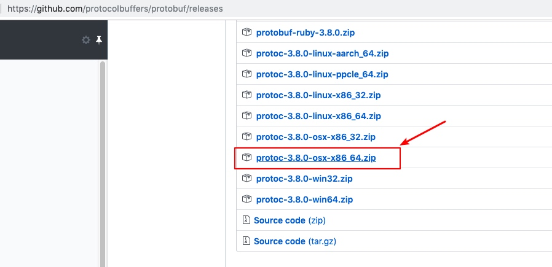
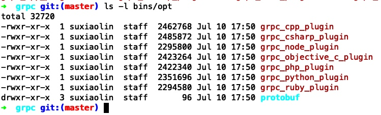
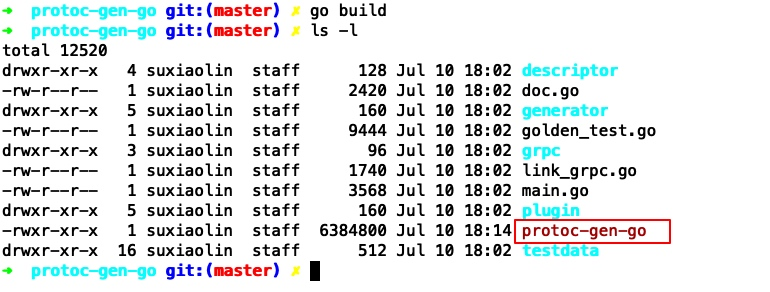
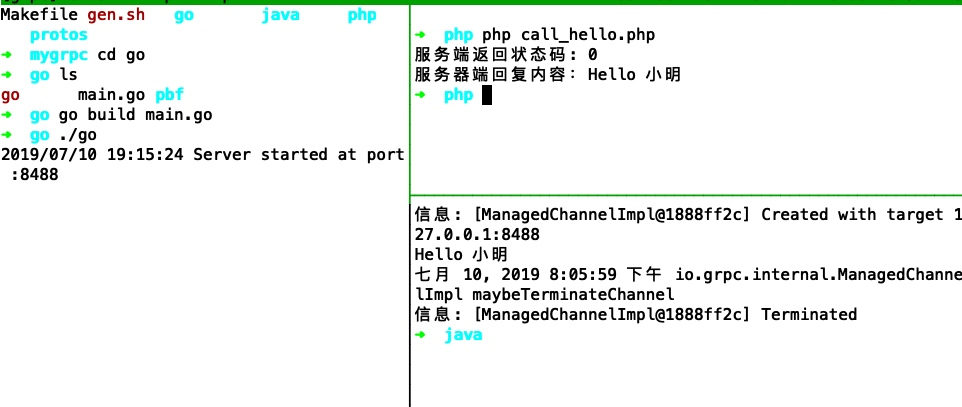

grpc作为经典的rpc协议，虽然略重，但是是有学习的价值的
通过下面的内容可以快速上手这个grpc框架
完整案例代码已上传github: https://github.com/neatlife/mygrpc
安装命令行工具
php需要这个额外的protoc、grpc_php_plugin工具把这个protobuf格式的文件生成php语言里的类
go需要安装protoc-gen-go工具把protobuf格式的接口定义文件生成go语言里的类定义
java无需手动安装额外工具，有maven即可，再次体现了java的优越性（
protoc
https://github.com/protocolbuffers/protobuf/releases

解压后，把bin目录放到PATH里面
编译grpc_php_plugin
git clone https://github.com/grpc/grpc.git
cd grpc
brew install autoconf automake libtool shtool
LIBTOOL=glibtool LIBTOOLIZE=glibtoolize make -j8
grpc源码库较大，可以直接开8核进行编译
编译好的grpc_php_plugin在bins/opt/目录下，把grpc_php_plugin放到PATH里面

安装php的grpc扩展
扩展的地址：http://pecl.php.net/package/gRPC
编译protoc-gen-go
项目地址：https://github.com/golang/protobuf
git clone https://github.com/golang/protobuf.git
cd protobuf/protoc-gen-go
go build
操作效果如下

把这个生成的protoc-gen-go放到PATH
案例设计
go: 提供grpc服务端，提供一个sayHello的接口，参数为代表名字的字符串，返回值为 “Hello"拼接上这个名字
java和php作为客户端调用这个go的客户端
grpc依赖
go
"golang.org/x/net/context"
"google.golang.org/grpc"
"google.golang.org/grpc/reflection"
java
<dependency>
<groupId>io.grpc</groupId>
<artifactId>grpc-netty</artifactId>
<version>1.0.0</version>
</dependency>
<dependency>
<groupId>io.grpc</groupId>
<artifactId>grpc-protobuf</artifactId>
<version>1.0.0</version>
</dependency>
<dependency>
<groupId>io.grpc</groupId>
<artifactId>grpc-stub</artifactId>
<version>1.0.0</version>
</dependency>
php
"grpc/grpc": "^v1.9",
"google/protobuf": "^v3.5"
核心代码
proto文件
syntax = "proto3";
option go_package = "pbf";
package helloworld;
// The greeting service definition.
service Hello {
// Sends a greeting
rpc SayHello (HelloRequest) returns (HelloResponse) {}
}
// The request message containing the user's name.
message HelloRequest {
string name = 1;
}
// The response message containing the greetings
message HelloResponse {
string message = 1;
}
这个protobuf文件定义了两个数据结构，HelloRequest和HelloResponse，和一个SayHello的接口
使用下面的命令把这个proto文件编译成对应的php和go的数据结构
#!/bin/bash
for file in ./protos/*.proto; do
echo "生成对应的php类文件: $file"
protoc -I ./protos --php_out=./php/pbf --grpc_out=./php/pbf --plugin=protoc-gen-grpc=$(which grpc_php_plugin) $file
done
protoc -I ./protos --go_out=plugins=grpc:./go/pbf ./protos/*.proto
go服务端核心代码
// helloServer implements helloworld.HelloServer
type helloServer struct{}
// SayHello implements helloworld.HelloServer
func (s *helloServer) SayHello(ctx context.Context, in *pbf.HelloRequest) (*pbf.HelloResponse, error) {
return &pbf.HelloResponse{Message: "Hello " + in.Name}, nil
}
func main() {
s := grpc.NewServer()
pbf.RegisterHelloServer(s, &helloServer{})
reflection.Register(s)
s.Serve(lis)
}
func (s *helloServer) SayHello(ctx context.Context, in *pbf.HelloRequest) (*pbf.HelloResponse, error)里面就是SayHello这个接口的具体实现了
php客户端核心代码
$name = '小明';
$client = new Helloworld\HelloClient('localhost:8488', [
'credentials' => Grpc\ChannelCredentials::createInsecure(),
]);
$request = new Helloworld\HelloRequest();
$request->setName($name);
list($response, $status) = $client->SayHello($request)->wait();
echo '服务端返回状态码: ' . $status->code . PHP_EOL;
echo "服务器端回复内容：" . $response->getMessage() . PHP_EOL;
code 0表示正常
java客户端核心代码
private final HelloGrpc.HelloBlockingStub blockingStub;
public HelloClient(String host, int port) {
//初始化连接
channel = ManagedChannelBuilder.forAddress(host, port)
.usePlaintext(true)
.build();
//初始化远程服务Stub
blockingStub = HelloGrpc.newBlockingStub(channel);
}
public String sayHello(String name) {
//构造服务调用参数对象
Helloworld.HelloRequest request = Helloworld.HelloRequest.newBuilder().setName(name).build();
//调用远程服务方法
Helloworld.HelloResponse response = blockingStub.sayHello(request);
//返回值
return response.getMessage();
}
sayHello()里就是通过grpc调用go的sayHello方法。
查看效果

可以看到，这三个程序都ok了
一些注意的点
go、java、php的编译已经写到了Makefile中, 使用make即可一键编译
使用protobuf格式的文件生成不同语言的dto，这样降低了这些dto文件的维护成本，需要使用时，使用protoc工具生成即可